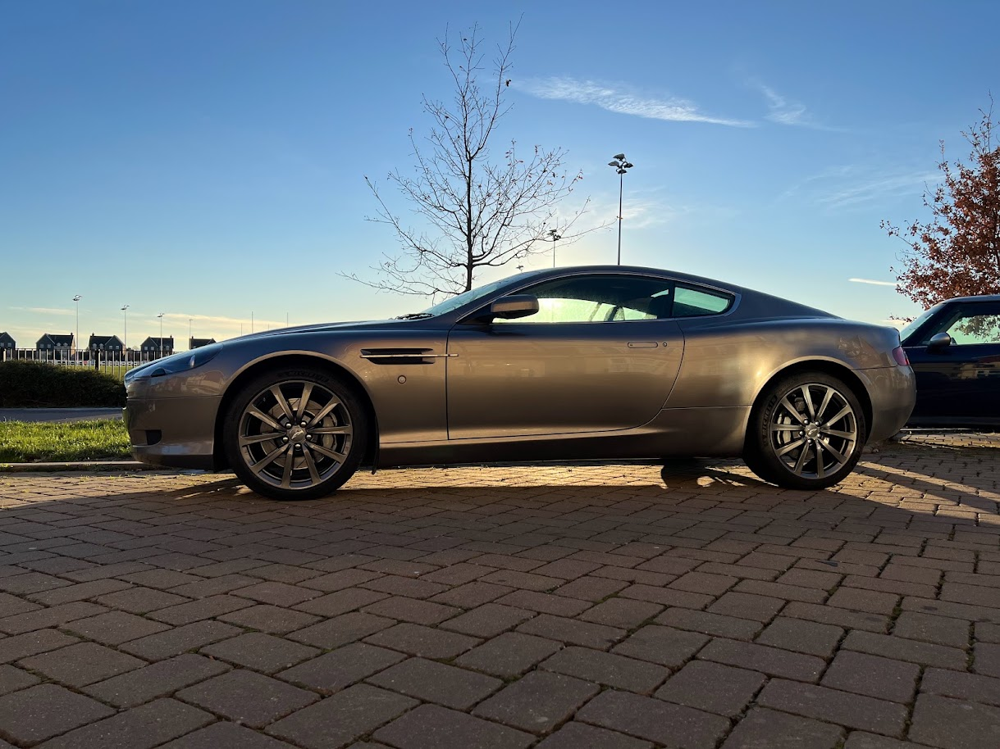
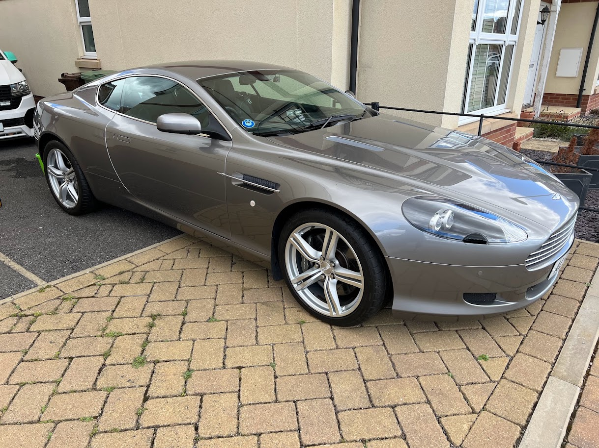
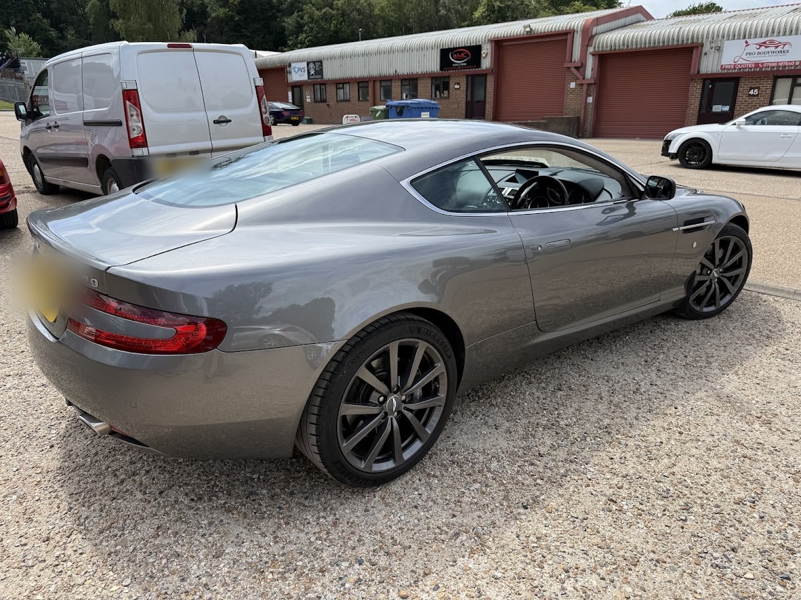

Subjectively, the most beautiful car ever made. Aston Martin's own brochure calls it "the quintessential sporting grand tourer". This page covers the car itself: how it was designed and engineered, what changed over its twelve-year life, and the 2009 specification of the car in the log.

The DB9 was designed by Ian Callum and Henrik Fisker. Callum set the basic shape, and Fisker, as Aston Martin's director of design, completed it. It was shown at the Frankfurt Motor Show in September 2003 and was the first car built at Aston Martin's then-new factory at Gaydon in Warwickshire.
The proportions do the work: a long bonnet, a short rear deck, a low glasshouse and a single-sweep roofline that flows through to the tail. Aston Martin's brochures always called the DB9 "perfectly proportioned", and when it marketed the 2013 facelift it went further: "the 'golden ratio' setting all proportions". It made the same claim across the range, from the Rapide S to the V8 Vantage. The golden ratio is roughly 1.618 to 1, a proportion artists and architects have used for centuries because the eye reads it as naturally balanced. Gary Meisner's annotated DB9 and Rapide S profiles mark where the body lines fall on golden-ratio points. Whatever the maths, it's a big part of why the car looks right from every angle, even standing still.

The details are classic Aston Martin:

Under the skin is Aston Martin's VH (Vertical/Horizontal) structure: a bonded, extruded-aluminium platform that is both very light and very stiff. It went on to underpin every Gaydon-era Aston, from the Vantage to the Rapide. The body panels are aluminium and composite, while the door frames, steering column and gearshift paddles are magnesium.
Development covered more than a million test miles, from Nardò in Italy to Death Valley and the Arctic Circle, and crash testing was done at the Volvo Safety Centre in Sweden.
From the 2009 update the DB9 gained the glass key Aston Martin calls the Emotion Control Unit (ECU): a block of glass and stainless steel, designed to feel "as tactile and refined as a fine timepiece". It isn't turned and there's no separate start button. The ECU docks into the glass starter at the centre of the dash:
Every part of the interior was hand-made and hand-finished, and it shows. Soft hand-stitched leather covers almost everything. The facia uses single-piece cuts of wood rather than thin strips: Walnut as standard, with Mahogany, Bamboo, Tamo Ash or Piano Black as options and matching door trim. Aluminium on the dash, instrument panel, centre console and door handles echoes the structure underneath.
The 2009 car brought a redesigned centre console in Iridium Silver and Graphite, with turned aluminium dials, an analogue clock at its heart, and the Touchtronic 2 buttons flanking the ECU. Standard equipment included 30 GB hard-disk satellite navigation (replacing the earlier DVD system) behind a screen that folds away when not in use, Bluetooth telephone, iPod connectivity in the armrest, a six-CD autochanger and Aston Martin's 700 W Premium Audio System, with a 1,000 W Bang & Olufsen BeoSound system as an option from the 2009.5 model year. Each car's paintwork took 50 hours of painting, polishing and finishing.
| Item | DB9 Coupé (2009 model year) |
|---|---|
| Engine | All-alloy 5,935 cc V12, quad overhead camshafts, 48 valves, compression ratio 10.9:1 |
| Power | 470 bhp (350 kW / 477 PS) at 6,000 rpm |
| Torque | 600 Nm (443 lb ft) at 5,000 rpm; 80% available from 1,500 rpm |
| Performance | 0–60 mph 4.6 s, 0–62 mph 4.8 s (manual or automatic); top speed 190 mph (306 km/h) |
| Transmission | Rear mid-mounted six-speed "Touchtronic 2" automatic with shift-by-wire, or six-speed manual; limited-slip differential; final drive 3.154:1 (auto), 3.54:1 (manual) |
| Steering | Rack and pinion, Servotronic speed-sensitive assistance, 3.0 turns lock to lock |
| Wheels & tyres | 19-inch 10-spoke alloys; Bridgestone Potenza 235/40 ZR19 front (8.5J), 275/35 ZR19 rear (9.5J) |
| Dimensions | Length 4,710 mm · width 1,875 mm · height 1,270 mm · wheelbase 2,745 mm |
| Weight | 1,760 kg kerb (Coupé); 267 bhp per tonne |
| Fuel | 80-litre tank; 18.2 mpg combined (auto), 17.2 mpg (manual) |
| Aerodynamics | Cd 0.35 (Coupé) |
The DB9 was built as a Coupé and a Volante (convertible) from January 2004 to July 2016, with around 16,500 made.
| When | What changed |
|---|---|
| 2003–04 · launch | Shown at Frankfurt in September 2003; production from January 2004, with the Volante following at Detroit. 450 bhp, 570 Nm. |
| 2008 · LM | The DB9 LM celebrated the DBR9's 2007 Le Mans GT1 win: Sarthe Silver, Sports Pack, Coupé and automatic only. 69 built. |
| 2009 model year · mid-life update | Power up to 470 bhp and 600 Nm (the AM09 engine), with a new gearbox valve body for quicker Touchtronic shifts; Bilstein dampers with revised upper arms and bushes; anodised five-bar grille and DBS-style door mirrors; redesigned centre console; hard-disk nav replacing the DVD system; the glass ECU key. Bang & Olufsen audio became an option from the 2009.5 model year, and the Volante gained a stiffer front shear panel (10% more torsional rigidity). |
| 2010 update (2011 model year) | Announced in June 2010: refreshed front bumper (the vents beside the air dam now turn down), hexagonal meshes, clear rear lights, revised headlamp bezels and 20-spoke wheels, with adaptive damping now standard. For the 2012 model year the manual gearbox was dropped, and Garmin-based navigation replaced the Volvo system. |
| 2012 facelift (2013 model year) | Reworked by Marek Reichman: bi-xenon headlamps with LED running lights, integrated boot-lid spoiler, 510 bhp (517 PS) and 620 Nm from the AM11-based V12, mounted 19 mm lower for pedestrian protection, carbon-ceramic brakes as standard, and adaptive damping with normal, sport and track modes. |
| 2015–16 · DB9 GT | The final version: 540 bhp (547 PS). The last nine coupés and nine Volantes were the "Last of the 9", all in Cumberland Grey. Production ended in July 2016 and the DB11 took over. |
A 2009 DB9 Coupé from the mid-life update: 470 bhp, Touchtronic 2 and the glass ECU key, in Tungsten Silver with Obsidian Black leather and a Walnut facia, bought in September 2021 at 44,000 miles with two previous owners, a full Aston Martin service history from new and a book full of dealer stamps. The 2009 and 2010 cars are relatively scarce, because the recession hit sales just as the update arrived; a manual is rarer still, at around 5% of all DB9s. Everything done to it since is in the owner's log. Its VIN shows the AM09 engine and Touchtronic gearbox; the DB9 VIN decoder reads the same details from any Gaydon-era Aston.
Sources: Aston Martin DB9 brochure (2009, part no. 703772); DB9 owner's guide (2010); Wikipedia and astonmartins.com for later model history; Aston Martin's VIN filings with the US regulator, NHTSA, for the engine codes; and the owner community, especially Aston 1936.